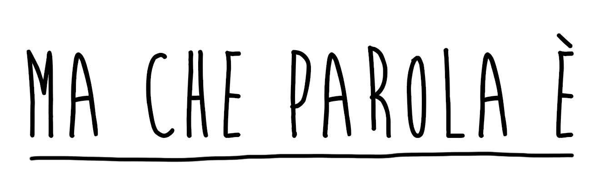

fringuello
frangiflutti
repentaglio
mangrovia
cipresso
rurale
sciabordare
contraltare
cardiopalma
pennichella
vilipendio
stalattiti
sciorinare
palombaro
promontorio
bambagia
sulfureo
suppellettili
bitume
primula
sabaudo
cobalto
frottola
ettolitro
perentorio
taratura
gengivite
duodeno
fessacchiotto
frontespizio
frattanto
fregola
clausura
santoreggia
zolfanello
saudita
ringhiera
frollino
panatura
cloruro
catapulta
contiguo
andropausa
leguminose
alambicco
pluriennale
rugiada
fandonia
prurito
sutura
portantina
apoteosi
subodorare
bruciapelo
auriga
rilento
umettare
nomadismo
luminare
liutaio
alitosi
calamaio
frantoio
faretra
epopea
radura
cotanto
aratro
furfante
soprassalto
parapetto
limonare
polpastrelli
fogliame
pulsantiera
salamoia
pagaia
paffutella
corbezzolo
adibire
bitorzoluto
bisaccia
monouso
calcinaccio
arraffare
fattucchiera
rinvigorire
giuggiola
savoiardo
nerboruto
patrocinato
drammaturgo
lapislazzuli
soppiatto
bisonte
bisunto
sconfinferare
cruscotto
paleontologo
ruminante
singulto
puleggia
suffumigi
fumenti
frumento
caraffa
sinonimo
partorire
cinciallegra
baldanzoso
amaramente
finferli
nostromo
astrolabio
osteopata
risicato
farfugliare
filigrana
cupidigia
pilastro
scafandro
depauperare
cosmesi
catarro
maritozzo
brodo
poppante
salsedine
malapena
avamposto
subliminale
smerigliare
lombrico
minuetto
mandragola
malavoglia
fornicare
beffardo
bofonchiare
fresatura
dirimpetto
pettoruto
fregnaccia
mulinello
rintronato
effluvio
sinalefe
stantuffo
brigante
monolite
smottamento
paturnie
inusitato
gramigna
borlotto
besciamella
garganella
inverecondo
cloaca
ciarpame
raganella
tremarella
poltiglia
lampredotto
poltrire
spaparanzarsi
occhieggiare
calendula
troccolo
baritono
croccante
follicolo
sopperire
inturgidito
barlume
zibibbo
mammoletta
pusillanime
caparra
moffetta
addirittura
nientemeno
omuncolo
capibara
sdoganare
betoniera
mannaggia
ceruleo
tritolo
basalto
brillo
bicocca
pattuglia
metetarso
titubante
titillare
petauro
sottopalla
marachella
mascalzone
briccone
birbante
marrano
gaglioffo
manigoldo
lestofante
scagnozzo
sgherro
fragoroso
accrocchio
combriccola
plurale
statuario
armadillo
cuccagna
toeletta
balaustra
cartotecnica
dittongo
andirivieni
appiccicaticcio
concomitanza
oberato
tarantella
prosopopea
antonomasia
pupo
sasso
remo
tortora
calcestruzzo
rimorchio
macigno
purpurea
ponpon
piegamento
petunia
cozza
porticato
succulento
criniera
cremisi
paranza
squacquerone
redarguito
argilla
bollore
spolverino
tripudio
saltimbanco
paciugo
sgranocchiare
ginocchio
capocchia
turpiloquio
grattugia
danaro
bavero
prono
sbrodolare
idillio
ebbene
ordunque
poffare
poffarbacco
rimuginare
ciancigare
prosperosa
ragguardevole
tritatutto
bomboniera
traveggole
baluardo
pluripremiato
avatar
tartara
sorbetto
sbarbato
botolo
pistillo
pralinato
scroto
lapilli
funesto
fustigare
piroetta
sonnellino
vetusto
pagnotta
tungsteno
totocalcio
rotocalco
concupire
aggeggio
fuliggine
lanuggine
flanella
lichene
prosumer
aficionado
discolo
succhiotto
sparviero
ammutinamento
spumeggiante
soporifero
voluminoso
triceratopo
baricentro
ridacchiare
bislacco
ammoniaca
armamentario
ammutolire
scalogna
appioppare
accollato
melenso
nosocomio
pelandrone
cangiante
allibito
ribollita
protuberanza
proboscide
bomber
crauto
paraculo
pennuto
batuffolo
fagotto
paffutello
claudicante
pareo
quintessenza
intercapedine
intruglio
intrufolarsi
cormorano
estenuante
ghiacciaia
citrullo
fratricida
forestiero
furente
gomitolo
graticola
fragore
saputello
bulbo
burino
balbuzie
sbertucciare
sgomento
saltuario
catacomba
rupestre
bolla
baffi
poppe
subbuglio
prodigio
patrocinio
lattosio
surrogato
parapendio
propoli
calcinculo
maniscalco
piroga
lupanare
madido
catamarano
confettura
splendere
pediluvio
sviolinare
risucchio
anemone
nonostante
quantunque
carpaccio
petardo
areola
refrattario
pachiderma
ruspante
altolà
caciotta
pappataci
esausto
frattempo
scucito
sottecchi
balocco
esanime
sgulvanito
bartavella
sbiontare
tamugno
barzotto
mariuolo
sbietta
saccagnare
sbligare
scapuzzo
luviria
papagna
paciugo
sgarzolino
ippolito
gianfranco
vladimiro
reginaldo
baldassarre
manolo
carmine
manlio
teodoro
gioele
luigi
castrocaro
selinunte
brisighella
filicudi
longastrino
morciano
© 2017 FDPA & gulpegaspe